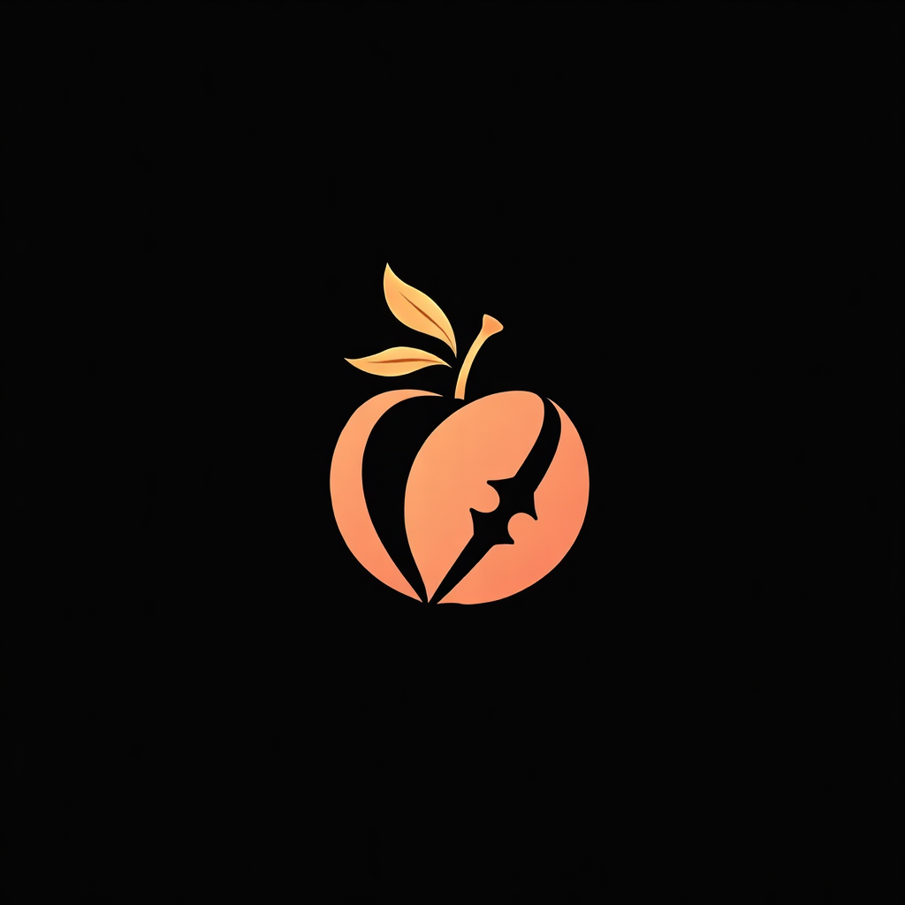

La douceur prend la parole. La précision attend son heure — puis tranche.
« Les mots sourient. La composition, elle, ne plaisante pas. »
L’élégance sombre mène. La pêche n’adoucit pas la lame : elle la rend mémorable.
Une maison numérique qui sait exactement quand se faire remarquer.
Le système montre ses outils, ses essais et ses décisions — avec chaleur, sans perdre la tenue.
« L’atelier reste ouvert. Le jugement, lui, reste aiguisé. »